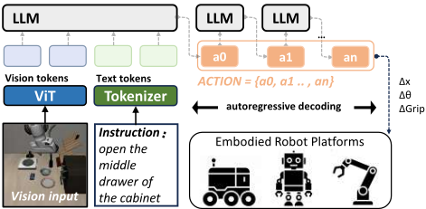
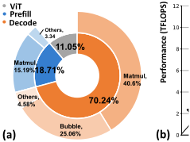
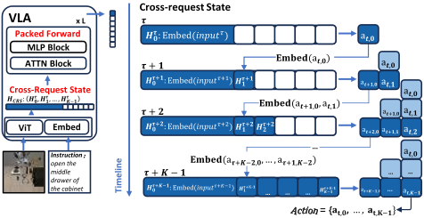
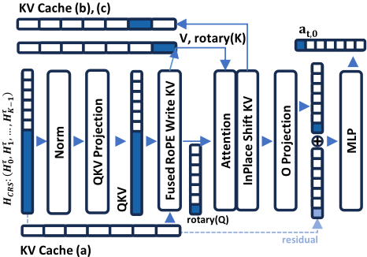
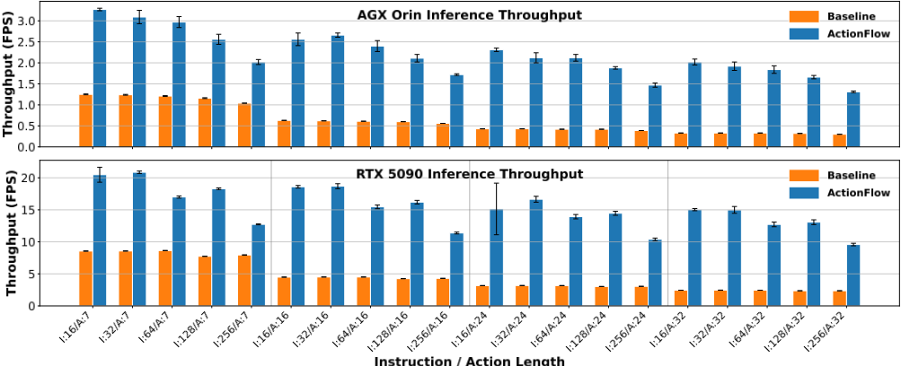

ActionFlow：面向边缘端视觉语言模型的流水线式动作加速
论文针对 Vision-Language-Action（VLA）模型在边缘设备上推理延迟过高（仅 3-5 FPS，远低于机器人动态控制所需的 20-30 Hz）的问题，提出纯系统级、无需重训练的推理加速框架 ActionFlow。其核心是将单次 VLA 推理（一个 Prefill 加多个 Decode）重构为微请求宏流水线，通过 Cross-Request Pipelining 策略把当前帧 compute-bound 的 Prefill 与历史帧 memory-bound 的 Decode 跨连续时间步批处理，提升硬件利用率。为支撑该调度，作者设计了 Cross-Request State Packed Forward 算子与 Unified KV Ring Buffer，将碎片化访存融合为稠密计算并消除 CPU-GPU 同步与数据拷贝开销。在 OpenVLA-7B 上，ActionFlow 于 Jetson AGX Orin 与 RTX 5090 均取得约 2.55 倍 FPS 提升，重负载下最高达 4.36 倍，且 LIBERO 任务成功率与基线持平。该工作属于边缘 AI 推理系统与调度优化，与团队内存/互连 IP 的架构、RTL 与验证职责无直接交集。
VLA 模型依赖 LLM 主干的自回归逐 token Decode，该阶段 memory-bound 且串行执行，导致边缘设备上推理频率仅 3-5 FPS，无法满足机器人 20-30 Hz 的流畅控制需求；现有量化/蒸馏等边缘优化不改变 Decode 的串行访存本质，服务器端 Continuous Batching 面向多用户场景不适用，而并行解码等算法级方案需大量重训练并可能损失精度，缺乏纯系统级、算法正交且无需重训练的加速方案。
ActionFlow 将一次 VLA 推理（1 个 Prefill + K-1 个 Decode）视为 K 级微请求流水线，在每个计算批内把当前请求的 compute-bound Prefill 与 K-1 个历史请求的 memory-bound Decode 打包为单个大 GEMM，将 K-1 个微小的 1×D GEMM 融合进 L_Q×D 矩阵乘法以提高算术强度；配合 Cross-Request State Packed Forward 算子（含 FusedRoPEAndWriteKV 融合核与 VarlenAttention 变长注意力）和 Unified KV Ring Buffer（单一物理连续的环形 KV 缓存，配合 InPlaceKVShift 原地移位更新），避免动态内存分配、KV 数据拷贝与 CPU-GPU 同步气泡。
端到端性能：Jetson AGX Orin 上 3.20 FPS vs 基线 1.25 FPS（2.56x 加速）；RTX 5090 上 19.45 FPS vs 7.62 FPS（2.55x 加速）
消融实验：相对朴素流水线实现（PIPE Naive），融合算子在 AGX Orin 额外带来 18.5% 提升（3.20 vs 2.70 FPS），在 RTX 5090 额外带来 24.7% 提升（19.45 vs 15.60 FPS）
重负载场景：RTX 5090 上 K=32 且长 Prefill 时 9.58 vs 2.36 FPS（4.06x）；AGX Orin 最重负载下 1.31 vs 0.30 FPS（4.36x）
对 Decode 长度 K 的鲁棒性：K 从 7 增至 32 时，基线吞吐下降约 72%（8.64→2.45 FPS），ActionFlow 仅下降 25%（17.00→12.72 FPS）
功能无损验证：LIBERO 基准上任务成功率与基线相当（spatial 83.4% vs 84.4%；object 68.8% vs 73.8%；goal 75.6% vs 74.4%），波动被认为不具统计显著性
自称首个纯系统级、无需重训练的 VLA 推理加速方案：不同于面向多用户服务器场景的 Continuous Batching、量化/蒸馏等边缘优化，以及需重训练的算法级并行解码/扩散替代方案，ActionFlow 利用机器人控制请求连续生成的天然特性，在单用户单请求流内部构造批处理机会，将 Decode 与 Prefill 跨请求流水线化，并与量化、投机解码等现有优化正交。
相关度级别：low
命中能力域：无明显对应
理由：论文属于边缘端 AI 推理系统与调度优化，贡献集中在 NVIDIA GPU 平台上的算子融合、变长注意力与 KV 缓存软件层管理，不涉及内存/互连 IP 的架构定义、可综合 RTL 实现、时序/物理实现，也不涉及 UVM/形式验证、仿真加速或 EDA 自动化，与团队 2.1~2.7 七个能力域均无实质交集。唯一间接关联是论文再次印证了自回归 Decode 等 AI 负载的 memory-bound 特征（算术强度仅 1.4096 FLOPs/Byte，无法利用 10.0 TFLOPS 峰值算力），可作为团队内存 IP（LPDDR5X/HBM4 等）面向 AI SoC 客户带宽需求的一般性背景认知，但不构成技术输入。
建议动作：仅了解结论
arXiv:2512.20276v1 [cs.AI] 2025年12月23日
王腾 ∗
| 0 | 1 | 2 |
|---|---|---|
| School of Computer Science and Technology, University of Science and Technology of China Hefei, China | Suzhou Institute for Advanced Research, University of Science and Technology of China Suzhou, China wangteng@ustc.edu.cn | School of Computer Science and Technology, University of Science and Technology of China Hefei, China |
| Qianyu Cheng School of Computer Science and Technology, University of Science and Technology of China Hefei, China | Yifei Zheng School of Computer Science and Technology, University of Science and Technology of China Hefei, China | Zhiyong Qiu IEIT SYSTEMS Co., Ltd. Beijing, China |
| Lei Gong School of Computer Science and Technology, University of Science and Technology of China Hefei, China | Wenqi Lou Suzhou Institute for Advanced Research, University of Science and Technology of China Suzhou, China | Xuehai Zhou School of Computer Science and Technology, University of Science and Technology of China Hefei, China Suzhou Institute for Advanced Research, University of Science and Technology of China |
| 0 | 1 | 2 |
视觉-语言-动作（Vision-Language-Action，VLA）模型已成为机器人感知与控制的统一范式，能够实现涌现式泛化与长时程任务执行。然而，高推理延迟严重阻碍了其在动态真实环境中的部署。尽管流畅的机器人交互需要 20-30 Hz 的控制频率，但由于自回归解码的访存受限（memory-bound）特性，当前 VLA 模型在边缘设备上通常仅能以 3-5 Hz 运行。现有优化方法往往需要大量的重新训练，或以牺牲模型精度为代价。
为弥合这一差距，我们提出了 ActionFlow，一个专为资源受限边缘平台量身定制的系统级推理框架。ActionFlow 的核心是跨请求流水线（Cross-Request Pipelining）策略，这是一种新颖的调度器，它将 VLA 推理重新定义为由微请求构成的宏流水线。该策略在连续时间步之间智能地将访存受限的 Decode 阶段与计算受限（compute-bound）的 Prefill 阶段进行批处理，以最大化硬件利用率。此外，为支持该调度，我们提出了跨请求状态打包前向（Cross-Request State Packed Forward）算子和统一 KV 环形缓冲区（Unified KV Ring Buffer），将碎片化的访存操作融合为高效的稠密计算。实验结果表明，ActionFlow 在无需重新训练的情况下，使 OpenVLA-7B 模型的 FPS 提升了 2.55 倍，从而在边缘硬件上实现了实时动态操作。我们的工作已发布于 https://anonymous.4open.science/r/ActionFlow-1D47。
∗ 通讯作者。
· 计算机系统组织 → 机器人学； · 计算方法学 → 人工智能。
视觉-语言-动作模型（VLA）、加速、具身机器人
视觉-语言-动作（Vision-Language-Action, VLA）模型代表了具身智能领域的范式转变，它将视觉感知、语言指令和动作输出统一在单一的端到端序列建模框架之中。通过摒弃传统的模块化“感知-规划-行动”（sense-plan-act）流水线，VLA 直接对世界状态与未来动作之间的关系进行建模 [21]。这一方法释放了变革性的能力。这些模型展现出对未见过的物体和场景的涌现泛化能力，能够理解复杂而抽象的自然语言，并成功执行长时程、多步骤的任务。这些突破正在积极推动从家庭助理机器人到自主工业操作等应用领域的探索 [15]。
尽管 VLA 在概念上具有强大能力，但其实际部署却受到高计算延迟的严重制约。机器人学领域普遍认为，涉及动态交互的控制回路——例如避障或人机协作——需要至少 10 Hz 的频率才能保证稳定性。20-30 Hz 的频率被认为是实现流畅且安全交互的理想水平 [3, 24]。低于该阈值的延迟会使机器人变得“迟钝”，无法对环境变化做出反应（例如，抓取

移动物体或躲避突发障碍物），甚至可能导致控制系统振荡。
然而，如图1所示，依赖自回归推理的主流 VLA 通常仅能以每秒 3-5 帧（FPS）的速度运行 [12]。这一性能差距在资源受限的边缘设备上更为严重；例如，70 亿参数的 OpenVLA 模型即使在 INT4 量化下，在 Jetson AGX Orin 平台上也只能达到 3 FPS。如此巨大的性能差距（3 FPS 对比 30 Hz）使 VLA 不适用于现实世界的动态任务，只能将其局限于缓慢的、回合制的场景。
性能瓶颈源于 LLM 骨干网络低效的自回归解码阶段。现有的优化策略未能在 VLA 场景下解决这一问题。传统的 LLM 推理引擎旨在通过请求批处理（request batching）最大化多用户服务器端场景的吞吐量；然而，它们并未解决机器人学中单用户、低延迟的需求。面向边缘的优化方法，如量化和蒸馏，虽然能减小模型规模，但并未改变逐 token 解码循环的串行、访存受限（memory-bound）本质。与此同时，VLA 专用的算法级优化，如并行解码 [23]，需要大量的重新训练，并存在降低任务性能的风险。我们的工作填补了这一关键空白，提出了首个无需重新训练即可加速推理的纯系统级解决方案。我们的关键洞察是：尽管 VLA 对外表现为单一请求流，但在内部生成完整响应涉及一系列微请求（具体而言，即一次 Prefill 和多次 Decode 操作）。这一观察表明，对该内部序列应用批处理可能进一步提升计算效率。
基于这一洞察，我们提出了一种采用跨请求流水线策略的新型调度器。该调度器在连续请求之间对 Prefill 和 Decode 微请求进行流水线处理，将多个串行的、访存受限的 Decode 微请求与单个计算受限（compute-bound）的 Prefill 微请求批处理为单个计算受限操作。为实现高效的流水线执行，我们设计了 Cross-Request State Packed Forward 算子来优化打包计算，并最终将其集成到我们的推理框架 ActionFlow 中。应用 ActionFlow 后，我们的系统在 OpenVLA 7B 模型上实现了 2.55 倍的 FPS 提升。
我们的贡献总结如下：
视觉-语言-动作（Vision-Language-Action, VLA）模型，如 LLaVA [18]、RT2 [37] 和 OpenVLA [11]，通过将视觉感知与自然语言指令相融合以直接生成可执行的机器人动作，已成为具身智能（embodied AI）的核心。这些模型通常构建于预训练多模态大模型之上，并在大规模机器人轨迹数据集上进行微调，以实现从观测到动作的端到端映射。大多数最先进的 VLA 模型遵循自回归生成范式——例如 RT-2 和 OpenVLA——其中动作被离散化为词元（token），并使用语言模型按顺序解码。具体而言，在每一步中，模型基于先前已生成的词元生成一个动作词元，从而形成严格的顺序依赖。这种逐词元的生成过程导致推理延迟随序列长度线性增长，使其无法满足实时机器人任务所需的高频、低延迟控制要求，并显著限制了其在动态环境中的实际部署。
为应对这一延迟挑战，我们首先考察通用的大语言模型（LLM）优化技术，这些技术主要面向数据中心场景设计。这些技术在提升大规模服务吞吐量方面取得了巨大成功，包括内存管理优化 [13]、调度优化 [1, 13, 33]、IO 感知注意力（IO-Aware Attention）[8, 9] 以及各种并行化策略 [22]。与此同时，另一条并行的优化路线则专为资源受限的边缘设备（例如手机、机器人）设计。该领域的工作在降低单次推理开销方面已取得显著进展，主要包括：（1）量化 [16, 30]；（2）投机解码（Speculative Decoding）[25, 34]；（3）KV 缓存优化 [2, 20]、注意力汇聚（attention sinks）[31]。
现有的 VLA 加速研究主要聚焦于算法层面，旨在通过修改计算任务本身来降低计算负载。这些工作大致可分为两类：其一是优化现有的自回归（AR）过程；其二是探索自回归的替代方案。
在优化 AR 过程方面，研究者们探索了多种路径。一条路径是减少数据搬运与内存访问开销，例如通过稀疏化 [7, 36] 或智能缓存复用 [32]。另一条路径是减少串行计算步数，采用诸如投机解码 [27] 或
ActionFlow: A Pipelined Action Acceleration for Vision Language Models on Edge Conference'17, July 2017, Washington, DC, USA

Packed
Peak Performance: 10TFLOP
250.0
Arithmetic Intensity (FLOPS/byte)
动态提前退出（early-exit）机制 [35] 等技术。第三条路径涉及模型压缩与轻量化设计 [26, 28]。
在探索 AR 替代方案方面，相关研究更加多样化。一些工作转向了非自回归生成范式，例如扩散模型 [14, 29] 或流匹配（flow matching）[4]。另一些工作则采用了具有线性复杂度的新架构 [19]。另一种流行的方法是结合动作分块（action chunking）的并行解码 [12, 23]。然而，这些替代方案往往会引入新的权衡：它们可能需要训练额外的模型、增加系统复杂度，或因观测滞后而导致动作输出不连续，影响控制平滑性 [4, 5]。此外，还有针对混合方法的探索，例如 fast-in-slow 双系统 [6] 或算法-架构协同设计 [10]。
综上所述，我们识别出一个独特且关键的研究空白。1) 大语言模型（LLM）的系统级优化（如连续批处理 Continuous Batching）已经存在，但其应用场景（多用户 vs. 单用户）与视觉-语言-动作（VLA）场景并不匹配。2) 以边缘为中心的优化（如量化）虽然是正交且有益的，却无法解决 Decode 阶段硬件利用率低这一根本问题。3) 现有的 VLA 加速工作仍停留在算法层面，需要额外的训练成本或可能导致精度下降，缺乏一种纯粹的、与算法正交的系统级加速方案。
为了精确定位真正的瓶颈，我们对 OpenVLA 模型在其目标硬件上的端到端推理延迟进行了分解，如图 2 所示。图 2a 给出了层次化的延迟分解。内环清晰地表明，由 Prefill 和 Decode 阶段组成的 LLM 推理在整条流水线中占据绝对主导地位，使初始的视觉编码器（ViT）开销相形见绌。外环进一步细化了这些阶段，揭示出尽管矩阵乘法（Matmul）总体上是最耗时的操作，但 Decode 阶段是单一最大的延迟来源。Decode 阶段存在两个关键且根深蒂固的低效问题。第一个问题由图 2b 中的 Roofline 分析加以说明。Decode 阶段中的关键操作，例如针对单个 token 的 QKV 投影，具有极低的算术强度（例如 1.4096 FLOPs/Byte）。这一特性使它们深陷硬件性能曲线的访存受限（memory-bound）区域，无法利用设备的峰值算力（10.0 TFLOPS），导致昂贵的加速器资源被浪费。第二个问题是低效内核执行带来的显著开销，如图 2a 中的“气泡”部分直观所示。由于 Decode 阶段逐 token 运行，它涉及启动数千个小型、独立的内核。这一串行过程产生了大量的调度开销和 GPU 空闲时间，进一步加剧了延迟瓶颈。这一分析使我们能够精确识别瓶颈的根本原因：自回归推理的固有特性。

至关重要的是，目前尚无任何工作解决这一根本问题：如何在不依赖外部批量请求的前提下提升 Decode 阶段的计算效率？
本文所提出的工作直接弥补了这一空白。我们提出了一种系统级调度方案，通过在单个请求内部创造批处理（batching）机会来加速推理过程。由于 VLA 控制过程必须持续不断地生成这些动作，我们可以利用这种天然的连续性。我们的核心动机是通过批处理，将当前 [Frame T] 计算密集型的 Prefill 过程与来自近期过去的 [Frame T-1, ...] 访存密集型的 Decode 过程相互重叠。这为 VLA 实现了一种纯粹的、系统级的加速，既不依赖外部的多用户请求，也无需修改模型的算法。我们的方法与量化、投机解码（speculative decoding）等现有优化完全正交。
在具体实现中，我们使用变长注意力（variable-length attention）算子来高效处理跨不同请求的注意力计算，这要求所有 K 个请求的 KV 历史数据在物理上存储于一个连续缓冲区中。朴素方法会在每一层动态构建这一连续缓冲区。这涉及从各自独立、非连续的内存地址（其中存储着各个请求的 KV 缓存）收集数据，并将其复制到新分配的连续内存块中。瓶颈在于，此类动态内存分配和数据复制操作对内存带宽的消耗极高。更关键的是，它们需要用 CPU 控制流来编排 GPU 数据流，从而引入显著的 CPU-GPU 同步气泡和数据搬运开销。为解决这一问题，我们实现了一种 Cross-Request State Packed Forward 方法，该方法对传统的 KV 缓存实现进行了重构，并使用融合算子来加速推理。
输入：视觉 Token 𝐼 𝑡 、文本 Token 𝐶 𝑡 （对应请求 𝑇 𝑡 ）、动作长度 𝐾 、阶段 1 ..𝐾 - 1 的累积动作序列：A sequences ← [ 0 , 𝐴 1 , . . . , 𝐴 𝐾 - 1 ] 、统一 KV 环形缓冲区：KV ( 𝑙 )，对于 𝑙 ∈ [ 1 , 𝑁 layers ]
×
输出：生成的动作序列 𝐴 𝑡 -( 𝐾 - 1 ) ∈ R 𝐾 1 （对应请求 𝑇 𝑡 -( 𝐾 - 1 ) ）
视觉-语言-动作（VLA）模型（如 OpenVLA）通过将视觉观察与语言指令映射为机器人动作，构成了现代具身智能体的核心。这类模型通常将视觉编码器与大语言模型（LLM）解码器相结合。在每个时间步 𝑡，智能体接收图像 𝐼 和指令 𝐶。视觉编码器生成视觉嵌入 𝐸 vision ∈ R 𝐿 𝑉 × 𝐷，而指令被嵌入为 𝐸 text ∈ R 𝐿 𝑇 × 𝐷。将二者拼接即得到 Prefill 输入 𝐸 prefill 𝑡 ∈ R 𝐿 𝑃 × 𝐷，其中 𝐿 𝑃 = 𝐿 𝑉 + 𝐿 𝑇。随后，LLM 以自回归方式生成长度固定的动作 token 序列 𝐴 𝑡 = { 𝑎 𝑡, 0 , . . . , 𝑎 𝑡,𝐾 - 1 }。我们将这一 𝐾 步序列称为微请求流水线（micro-request pipeline）。
如图 3 所示，我们将 𝐾 步生成过程（一次 Prefill、𝐾 - 1 次 Decode）视为一个 𝐾 级流水线。其核心思想是在任意给定的计算批次 𝜏 中重叠来自 𝐾 个连续请求的计算。在每个计算批次 𝜏 中，我们将当前请求 𝑇 𝑡 的 Prefill 阶段与 𝐾 - 1 个历史请求 𝑇 𝑡 - 𝑗 的第 𝑗 次 Decode 阶段打包在一起（其中 𝑗 = 1 , . . . , 𝐾 - 1）。这种跨请求的重叠消除了流水线气泡，并使硬件利用率最大化。ActionFlow 的整体工作流程在算法 1 中进行了形式化描述。
该算法在各时间步之间维护两个持久状态：(1) 累积缓冲区 A sequences，用于存储当前处于流水线中的 𝐾 - 1 个并发请求的部分生成动作序列；(2) 每个 Transformer 层上的统一 KV 缓存环形缓冲区 KV ( 𝑙 )，用于管理所有流水线阶段的键值状态。
在每个时间步，我们通过将当前的视觉与文本 token（𝐼 𝑡 , 𝐶 𝑡）与从 A sequences 中每个活跃部分序列取出的最新 token 相拼接，构建一个组合输入批次。该批次经过一次 Packed Execution 处理，以并行方式处理所有流水线阶段。随后，生成的预测被追加到各自对应的部分序列中。这使得所有序列在流水线缓冲区内移动到下一阶段：最早进入的序列（已完成 𝐾 次推理步骤）作为完整生成的 𝐴fi nal 被输出，而其余序列则继续推进以进行后续生成。
为实现这种 Packed Execution，我们首先定义跨请求状态（Cross-Request State, CRS）。在计算批次 𝜏 处，CRS 记为 𝐻 ( 𝜏 ) CRS，它是将 𝐾 个不同的阶段输入 𝐻 ( 𝜏 ) 𝑠 沿序列维度聚合而成的单个张量：
其中，𝐻 ( 𝜏 ) 0 = 𝐸 prefill 𝑡 ∈ R 𝐿 𝑃 × 𝐷 是当前时间步 𝑡 的 Prefill 输入。后续输入 𝐻 ( 𝜏 ) 𝑠 ∈ R 1 × 𝐷（其中 𝑠 ∈ [ 1 , 𝐾 - 1 ]）是历史请求 𝑇 𝑡 - 𝑠 的第 𝑠 个解码步骤所对应的 token 嵌入。该聚合最终形成单个打包张量 𝐻 ( 𝜏 ) CRS，其总序列长度为 𝐿 𝑄 = 𝐿 𝑃 + ( 𝐾 - 1 )。
输入：跨请求状态 𝐻 CRS、统一 KV 环形缓冲区 KV ( 𝑙 )、序列长度 𝐿 𝑠
输出：输出隐藏状态 𝐻 CRS
我们将 𝐻 ( 𝜏 ) CRS 作为一个单一的整体批次，在一次前向传播中通过所有 Transformer 层，其形式化描述如算法 2 所示。
在每一层内部，归一化后的隐藏状态首先被投影为 Queries、Keys 和 Values。我们采用融合算子 FusedRoPEAndWriteKV 来应用旋转位置编码（Rotary Positional Embeddings），同时将新的 Key-Value 对存入统一 KV 环形缓冲区 KV ( 𝑙 )。随后通过变长注意力机制 VarlenAttention 计算自注意力，该机制能够在具有不同历史长度的并发流水线阶段之间高效地从环形缓冲区中检索上下文。关键在于，在最终投影之前，InPlaceKVShift 操作会更新环形缓冲区的滑动窗口，丢弃过期的 token，为下一个时间步准备好内存布局。
这一设计显著提升了计算效率：来自 Decode 步骤的 𝐾 - 1 个微小的 ( 1 × 𝐷 ) GEMM——通常访存受限且 ALU 利用率低下——与中等规模的 Prefill GEMM 融合为一次大型 ( 𝐿 𝑄 × 𝐷 ) 矩阵乘法。由此带来的算术强度（FLOPs/byte）提升使工作负载从访存受限转变为计算受限，从而实现接近峰值的 GPU 利用率。逐元素操作（例如 LayerNorm、激活函数）不受批处理的影响，不会产生额外开销。
然而，这种批处理在自注意力层中引入了一个关键挑战：𝐻 ( 𝜏 ) CRS 中的 𝐾 个片段需要访问彼此不相交且长度各异的上下文历史。Prefill 片段在其 𝐿 𝑃 个 token 上进行因果注意力计算，而每个 Decode 片段必须 ActionFlow: A Pipelined Action Acceleration for Vision Language Models on Edge Conference'17, July 2017, Washington, DC, USA

在其逻辑长度为 𝐿 𝑃 + 𝑠 的自身 KV 缓存上进行注意力计算。现代变长注意力算子要求所有 KV 历史驻留在物理上连续的内存缓冲区中。一种朴素的做法是在每一层之前动态地收集并复制来自 𝐾 个非连续缓存的 KV 数据，这一过程不仅带宽消耗巨大，还会强制进行 CPU-GPU 同步，从而抵消批处理带来的性能收益。
为解决内存布局难题，我们提出了一种统一 KV 环形缓冲区（Unified KV Ring Buffer）。如图 4 所示，我们将所有活跃请求的 KV 状态维护在一个单一的、循环的、物理上连续的内存区域中。尽管在逻辑上按请求进行划分，其物理存储却满足 Varlen-Attention 算子的严格布局要求。
算法 2 通过三个协同步骤利用这一结构，对缓冲区槽位的生命周期进行管理，如图 4 所示：首先，从 KV Cache (a) 所示的陈旧状态出发，一个融合内核应用旋转位置编码（RoPE）并将新的键/值直接写入其指定偏移量，将缓冲区更新至 KV Cache (b) 的状态（第 3 行）。其次，对整个打包后的查询以及现已连续的统一缓冲区执行一次变长注意力操作（第 4 行）。最后，原位移位操作为下一个时间步轮转缓冲区索引，将布局转变为 KV Cache (c)（第 5 行），从而免除了代价高昂的内存分配和 CPU 干预。
第一个内核 FusedRoPEAndWriteKV 在 QKV 投影之后立即运行。对于每个键/查询向量，它根据其在原始请求中的逻辑位置（例如，处于阶段 𝑠 的令牌对应位置 𝐿 𝑃 + 𝑠）应用 RoPE，并将结果直接写入环形缓冲区中预先计算好的物理地址。通过融合编码与写入操作，该内核避免了在 DRAM 中物化中间 RoPE 输出，从而节省了大量内存带宽，并确保 Varlen-Attention 算子能够看到即取即用的连续 KV 布局。
在流水线迭代之间，第二个内核 InPlaceKVShift 完全在设备端更新缓冲区状态。它执行一次物理内存拷贝，将阶段 0 至 𝐾 - 2 的 KV 数据移至阶段 1 至 𝐾 - 1 的内存槽位，从而有效地覆盖被逐出的最旧请求（阶段 𝐾 - 1）。尽管涉及数据搬移，这种方法相比标准缓存管理具有明显优势：它消除了 CPU-GPU 同步开销（防止流水线气泡），规避了动态设备内存分配的延迟，并完全避免了内存碎片。
这些技术共同使 ActionFlow 能够在实时具身控制中维持高吞吐量与低延迟，将本质上串行的视觉-语言-动作（VLA）推理转变为深度流水线化、计算饱和的工作流程。
我们进行了全面的实验评估，以验证所提出的 ActionFlow 系统的性能、鲁棒性和功能正确性。
硬件平台。为了评估我们的方法在整个边缘计算频谱上的鲁棒性与可扩展性，我们在两个不同的 NVIDIA 平台上开展了实验：1) NVIDIA Jetson AGX Orin（64GB），代表移动机器人中典型的资源受限嵌入式设备；2) NVIDIA RTX 5090，代表具备充足内存带宽与计算能力的高性能边缘工作站。这种双平台设置验证了我们的优化在差异巨大的硬件约束与架构代际之间均能保持有效。
模型与软件。我们使用 OpenVLA-7B 模型。我们的软件栈基于 PyTorch==2.6.0、Transformers 库==4.49.0 以及 CUDA 12.6 构建。
评估指标。我们采用每秒帧数（Frames Per Second, FPS）作为衡量 VLA 吞吐量的核心指标来评估系统性能。为了评估操作能力，我们在大量随机种子上执行跨多个类别（Spatial、Object、Goal、Long）的多项任务。我们报告成功率（Success Rate），以证明与基线相比，我们的方法不会造成任务精度的下降。对比系统。我们比较了三种实现：
本节将 ActionFlow 与各基线进行端到端性能对比评估，以证明其有效性，并量化我们所提出的内核融合（kernel fusion）的必要性。
| Method | Platform | FPS | Time (ms) | Speedup |
|---|---|---|---|---|
| Baseline | AGX Orin | 1.25 ± 0.01 | 0.8030 ± 0.0044 | 1.00x |
| Naive Pipe | AGX Orin | 2.70 ± 0.19 | 0.3731 ± 0.0299 | 2.16x |
| ActionFlow | AGX Orin | 3.20 ± 0.17 | 0.3131 ± 0.0170 | 2.56x |
| Baseline | RTX 5090 | 7.62 ± 0.14 | 0.1312 ± 0.0024 | 1.00x |
| Naive Pipe | RTX 5090 | 15.60 ± 0.08 | 0.0641 ± 0.0003 | 2.04x |
| ActionFlow | RTX 5090 | 19.45 ± 0.22 | 0.0514 ± 0.0006 | 2.55x |
| Method | Platform | FPS | Time (ms) | Speedup |
表 1 总结了典型工作负载下的核心性能结果。结果清楚地证明了 ActionFlow 在两个平台上的有效性。在资源受限的 AGX Orin 上，我们的系统达到了 3.20 FPS，相比基线（Baseline，1.25 FPS）实现了 2.56 倍的加速。在 5090 数据中心 GPU 上，我们观察到几乎相同的 2.55 倍加速（19.45 FPS 对比 7.62 FPS）。这证实了我们流水线策略的鲁棒性和跨架构有效性。
消融实验（ablation study）将 ActionFlow（Ours）与 PIPE（Naive）进行对比，凸显了我们自定义融合算子的关键作用。朴素实现仍然受制于数据拷贝和同步开销，其性能显著低于我们的完整系统。在 AGX Orin 上，ActionFlow 相比朴素版本带来了额外的 18.5% 性能提升（3.20 FPS 对比 2.70 FPS）。这一差距在 5090 上更为显著，我们的融合内核解锁了额外的 24.7% 性能（19.45 FPS 对比 15.60 FPS）。这验证了我们的设计，证明如第 3 节所述，消除同步气泡和数据重组开销对于充分发挥 PIPE 调度策略的全部潜力至关重要。
为了评估 ActionFlow 的鲁棒性，我们在广泛的工作负载范围内进行了敏感性分析，同时改变 Prefill 长度（𝐿 𝑃）和 Decode 长度（𝐾）。图 5 展示了在这些不同条件下，我们的完整系统与 Baseline 之间详细的吞吐量（FPS）对比。
我们从这一分析中得出三个关键结论。首先，ActionFlow 在所有配置下都表现良好。如图 5 所示，在两种硬件平台上，对于每个动作长度（𝐾 ∈ { 7 , 16 , 24 , 32 }）和每个 prefill 长度（指令长度加上 256 个视觉 token），我们系统的吞吐量（蓝色柱）都显著高于 Baseline（橙色柱）。
其次，我们的加速在重负载下最为显著。当任务要求更高时，我们流水线策略的优势会被进一步放大。例如，在 RTX 5090 平台上，在 𝐾 = 32 和长 prefill 设置的重负载下，Baseline 的性能显著下降至 2.36 FPS。相比之下，ActionFlow 保持了 9.58 FPS，实现了 4.06 倍的加速。类似地，在 AGX Orin 上，我们在最重的工作负载下观察到 4.36 倍的加速（1.31 FPS 对比 0.30 FPS）。
第三，ActionFlow 对 Decode 长度（𝐾）表现出卓越的鲁棒性，而 Decode 长度正是 Baseline 的主要瓶颈。在 RTX 5090 上，将 𝐾 从 7 增加到 32 会使 Baseline 的吞吐量降低约 72%（从 8.64 FPS 降至 2.45 FPS）。然而，我们的系统仅经历了 25% 的下降（从 17.00 降至 12.72
| Method | Platform | spatial | object | goal | 10 |
|---|---|---|---|---|---|
| OpenVLA | RTX 5090 | 84.4% | 73.8% | 74.4% | 51.4% |
| ActionFlow | RTX 5090 | 84.3% | 71.2% | 78.6% | 53.3% |
| ActionFlow | AGX Orin | 83.4% | 68.8% | 75.6% | 49.0% |
| Method | Platform | spatial | object | goal | 10 |
FPS）。这表明我们的跨请求流水线策略成功地摊销了自回归生成的串行开销，使其对于需要更长动作序列的任务具有更强的鲁棒性。
任何系统优化的一项关键要求是保持功能上的无损性。我们验证了 ActionFlow 不会损害视觉-语言-动作（VLA）模型的任务完成能力。我们使用 LIBERO 基准测试套件 [17] 来开展此项验证。我们在两个硬件平台上分别使用 Baseline 系统和我们的 ActionFlow 系统，跨多个随机种子执行来自不同类别（空间、物体、目标、长程）的多个任务。然后，我们记录并比较平均任务成功率。
对 AGX Orin 上运行结果的分析表明，ActionFlow（Ours）在所有任务类别中均保持了与 Baseline 功能性能相当的成功率（例如，空间：83.4% vs. 84.4%；物体：68.8% vs. 73.8%；目标：75.6% vs. 74.4%）。这些微小波动在统计上不被视为显著，从而证实了我们系统优化的功能无损特性。
本文解决了阻碍视觉-语言-动作（VLA）模型在资源受限边缘设备上实际部署的关键延迟瓶颈。我们提出了 ActionFlow，一种从根本上重新定义 VLA 执行方式的全新系统级推理框架。通过将自回归生成过程解构为微请求流水线，我们提出的跨请求流水线（Cross-Request Pipelining）策略有效地将历史步骤中受内存限制的 Decode 阶段与当前步骤中受计算限制的 Prefill 阶段相互重叠。这一架构转变由我们自定义的 Cross-Request State Packed Forward 算子和 Unified KV Ring Buffer 实现，二者将碎片化的内存操作融合为密集计算，并消除了高昂的同步开销。
在 NVIDIA Jetson AGX Orin 和 RTX 5090 平台上开展的大量评估表明，ActionFlow 为 OpenVLA 7B 模型带来了稳定的 2.55 × 加速，使边缘硬件能够实现更高频率的控制。至关重要的是，我们的方法不会造成任务精度损失，并且与量化等算法级优化保持正交。通过弥合大型基础模型与机器人控制严格延迟要求之间的差距，ActionFlow 为通用具身智能体在动态真实环境中的部署铺平了道路。

指令 / 动作长度